TRIP OVERVIEW
Day 1 – Lincoln Memorial · National Gallery of Art · Library of Congress · US Capitol
Day 2 – Washington Monument · National WWII Memorial · Jefferson Memorial · Martin Luther King Jr. Memorial
Day 3 – National Museum of African American History and Culture · National Museum of American History · National Museum of Natural History · National Air and Space Museum · National Archives
Day 4 – Arlington National Cemetery · Marine Corps War Memorial · Old Stone House · Kennedy Center
Day 5 · 🚆 Train Day — Philadelphia
Day 1
🏨 From Hotel: 🚕 10 min → Lincoln Memorial
1. Lincoln Memorial
↳ The Lincoln Memorial houses Daniel Chester French's 19-foot seated marble statue inside a Greek Revival colonnade. The west-facing terrace overlooks the Reflecting Pool and the Washington Monument along the National Mall.
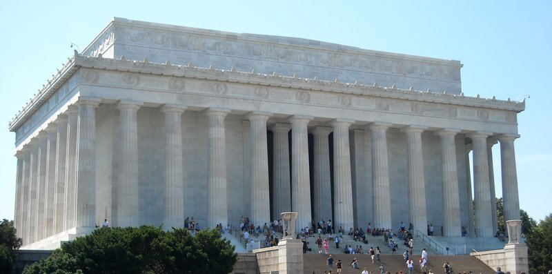
🚶 20 min · 🚕 7 min → National Gallery of Art
2. National Gallery of Art
↳ The National Gallery spans two buildings connected underground: the neoclassical West Building with Vermeer, Rembrandt, and Leonardo; and I.M. Pei's East Building with modern art and a Calder mobile in the soaring atrium.
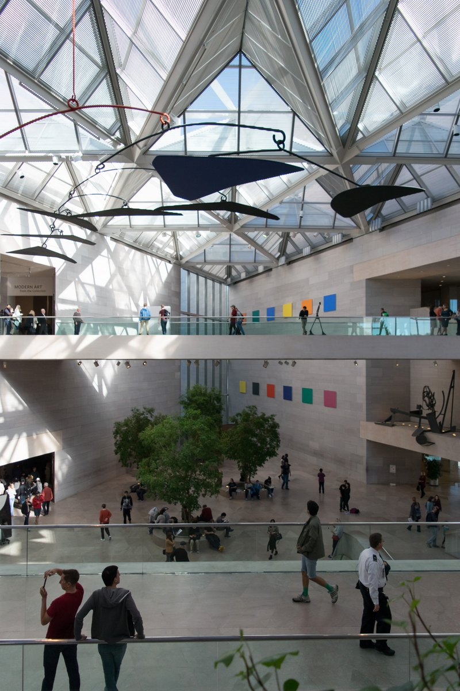
🚶 15 min · 🚕 5 min → Library of Congress
3. Library of Congress
↳ The Library of Congress is the world's largest library, with over 170 million items. The Thomas Jefferson Building's Great Hall and Main Reading Room are among the most ornate public interiors in the country, rising eight stories under a painted vaulted ceiling.
🏛️ Monday - Saturday 8:30am - 4:30pm
🚫 Closed Sunday
⏰ ~1 hr
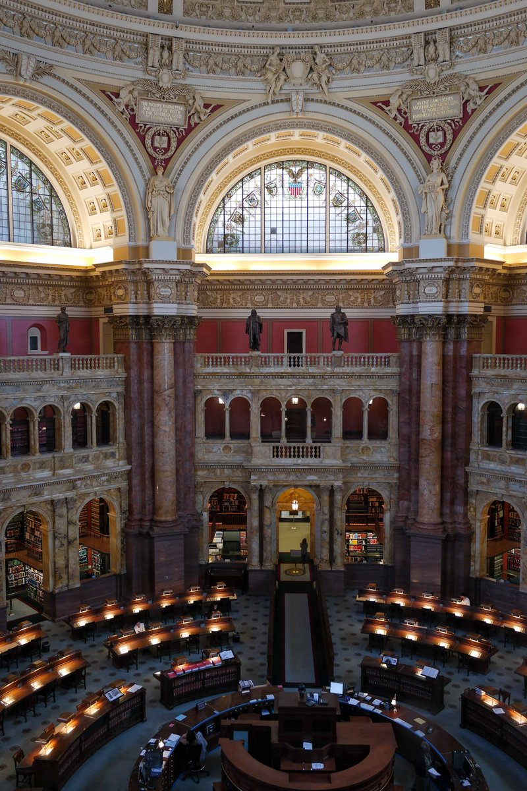
🚶 5 min · 🚕 2 min → US Capitol
4. US Capitol
↳ The US Capitol houses the Senate and House under its cast-iron dome, Washington's defining silhouette. The Capitol Visitor Center includes the Rotunda, Statuary Hall, and the Crypt; timed-entry reservations are required in advance.
🏛️ Monday - Saturday 8:30am - 4:30pm
🚫 Closed Sunday
⏰ ~1 hr 30 min
⚠️ Free timed-entry tours require advance reservation
🎫 book at: visitthecapitol.gov
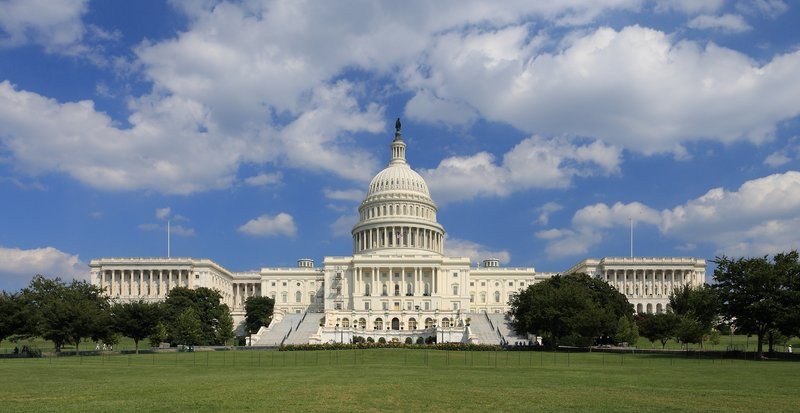
🚶 18 min · 🚕 5 min → hotel
Day 2
🏨 From Hotel: 🚶 22 min · 🚕 6 min → Washington Monument
1. Washington Monument
↳ The Washington Monument is a 555-foot marble obelisk honoring the nation's first president. An elevator carries visitors to the observation deck for panoramic views over the National Mall and the city beyond.
🏛️ Daily 9:00am - 5:00pm
⏰ ~1 hr
⚠️ Free timed-entry ticket required for observation deck access
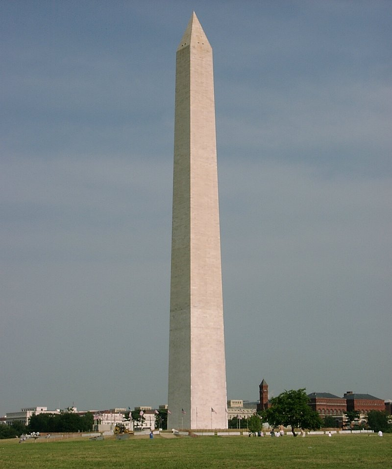
🚶 10 min · 🚕 4 min → National WWII Memorial
2. National WWII Memorial
↳ The National WWII Memorial honors the 16 million Americans who served in the armed forces during World War II. Fifty-six granite pillars represent every state and territory around a central plaza, and the Freedom Wall's 4,048 gold stars each stand for 100 American war dead.
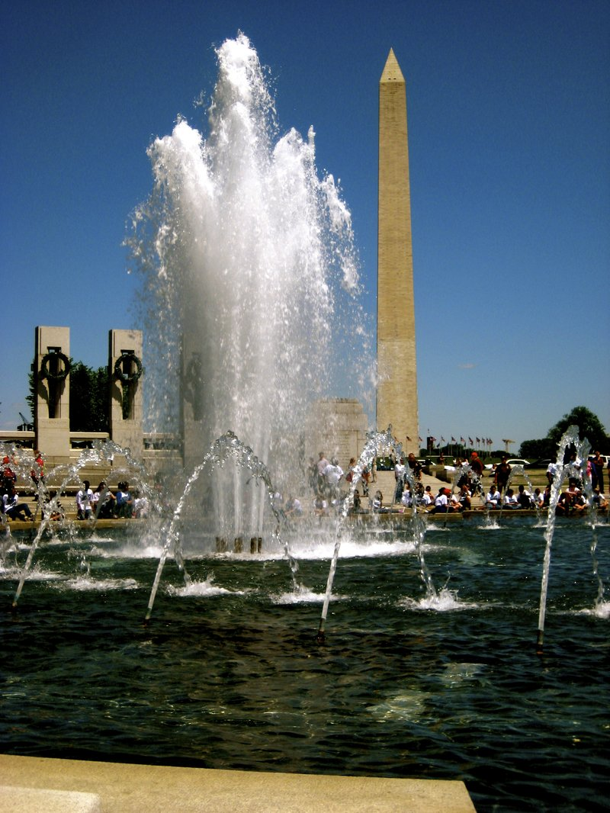
🚶 16 min · 🚕 5 min → Jefferson Memorial
3. Jefferson Memorial
↳ The Jefferson Memorial is a neoclassical rotunda on the Tidal Basin honoring the third president and principal author of the Declaration of Independence. Quotations from Jefferson's writings line the interior walls beneath a domed ceiling modeled on the Pantheon.
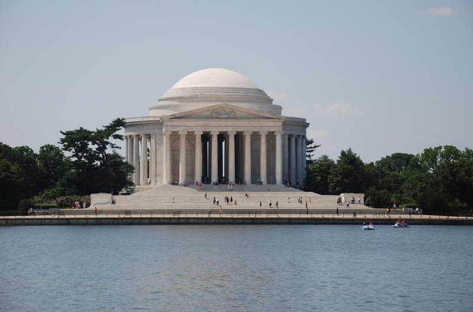
🚶 12 min · 🚕 5 min → Martin Luther King Jr. Memorial
4. Martin Luther King Jr. Memorial
↳ The Martin Luther King Jr. Memorial centers on the 30-foot "Stone of Hope," a granite statue of King emerging from a boulder split in two. An inscription wall along the site carries fourteen quotations drawn from his speeches and sermons.
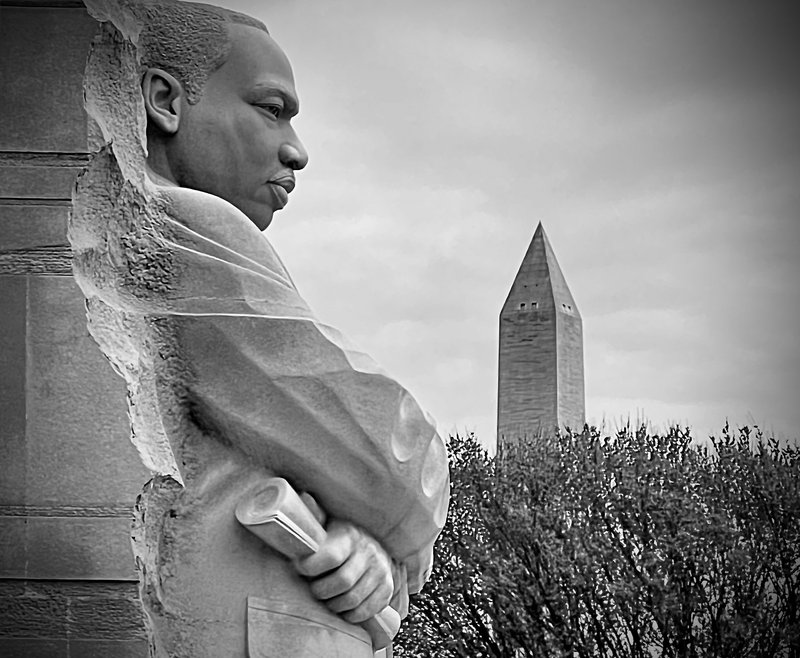
🚶 38 min · 🚕 10 min → hotel
Day 3
🏨 From Hotel: 🚶 22 min · 🚕 6 min → National Museum of African American History and Culture
1. National Museum of African American History and Culture
↳ The National Museum of African American History and Culture traces the African American experience from slavery through the civil rights era to the present, across galleries beneath a three-tiered bronze corona facade inspired by Yoruba crown design.
🏛️ Daily 10:00am - 5:30pm
⏰ ~2 hr
⚠️ Free timed-entry passes required; released in advance online
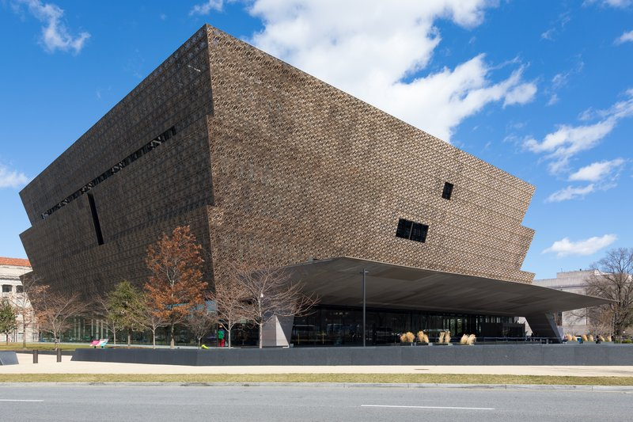
🚶 4 min · 🚕 2 min → National Museum of American History
2. National Museum of American History
↳ The National Museum of American History spans the country's social, political, and cultural history. Its centerpiece is the original Star-Spangled Banner flag, displayed in a climate-controlled chamber at the heart of the building.
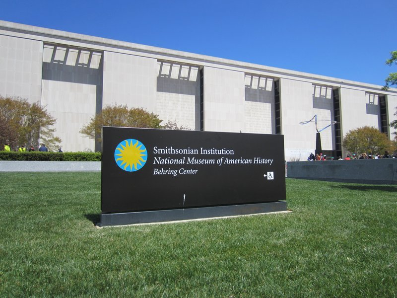
🚶 4 min · 🚕 2 min → National Museum of Natural History
3. National Museum of Natural History
↳ The National Museum of Natural History holds over 148 million specimens spanning paleontology, anthropology, and geology, including the Hope Diamond and the taxidermied African bush elephant that has greeted visitors in the rotunda since 1959.
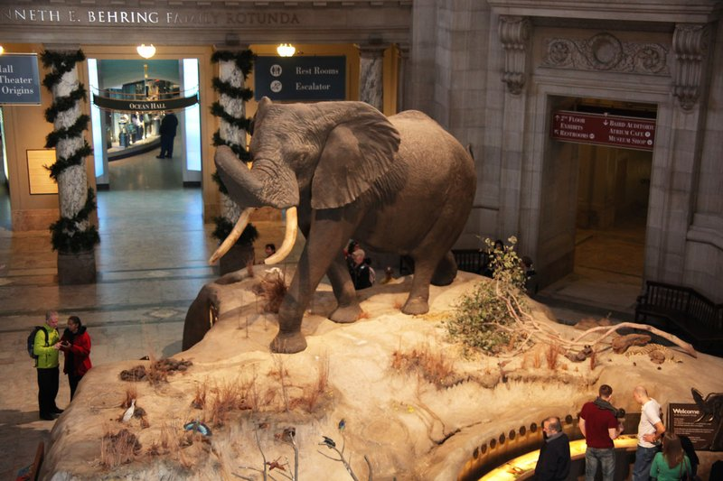
🚶 12 min · 🚕 5 min → National Air and Space Museum
4. National Air and Space Museum
↳ The National Air and Space Museum holds the world's largest collection of historic aircraft and spacecraft, including the Wright Flyer, Charles Lindbergh's Spirit of St. Louis, and the Apollo 11 command module.
🏛️ Daily 10:00am - 5:30pm
⏰ ~2 hr
⚠️ Free timed-entry passes required; released in advance online

🚶 10 min · 🚕 4 min → National Archives Museum
5. National Archives Museum
↳ The National Archives Museum displays the original Declaration of Independence, Constitution, and Bill of Rights in the Rotunda for the Charters of Freedom, alongside rotating exhibits drawn from the nation's permanent historical record.
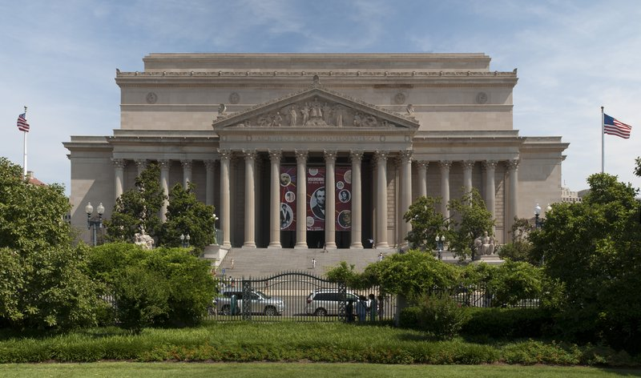
🚶 20 min · 🚕 6 min → hotel
Day 4
🏨 From Hotel: 🚕 12 min → Arlington National Cemetery
1. Arlington National Cemetery
↳ Arlington National Cemetery honors more than 400,000 service members across 639 acres in Virginia. The Tomb of the Unknown Soldier is guarded around the clock by the 3rd US Infantry Regiment, with the Changing of the Guard performed every half hour in daylight hours.
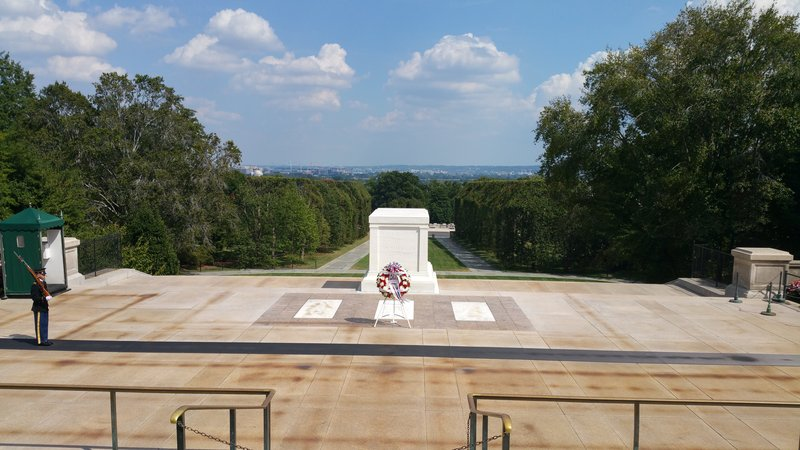
🚕 4 min → Marine Corps War Memorial
2. Marine Corps War Memorial
↳ The Marine Corps War Memorial, known as the Iwo Jima Memorial, is a 32-foot bronze sculpture of the six Marines raising the American flag atop Mount Suribachi in 1945, honoring every Marine who has died in service since 1775.
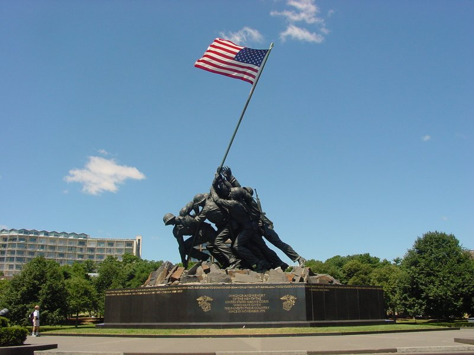
🚕 8 min → Old Stone House
3. Old Stone House
↳ Built in 1765, the Old Stone House is the last surviving pre-revolutionary colonial building in Washington DC. The National Park Service furnishes the rooms in period style, with a Colonial Revival garden open behind the house.
🏛️ Monday - Thursday 11:00am - 6:00pm
🏛️ Friday - Sunday 11:00am - 7:00pm
⏰ ~30 min
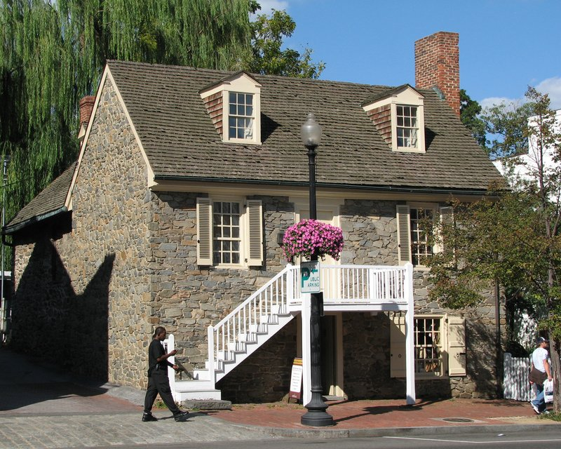
🚶 25 min · 🚕 6 min → Kennedy Center
4. Kennedy Center
↳ The Kennedy Center's 630-foot Grand Foyer, lined with crystal chandeliers, overlooks the Potomac River from Edward Durell Stone's 1971 building. The free rooftop terrace and daily Millennium Stage performances are open to the public without a ticket.
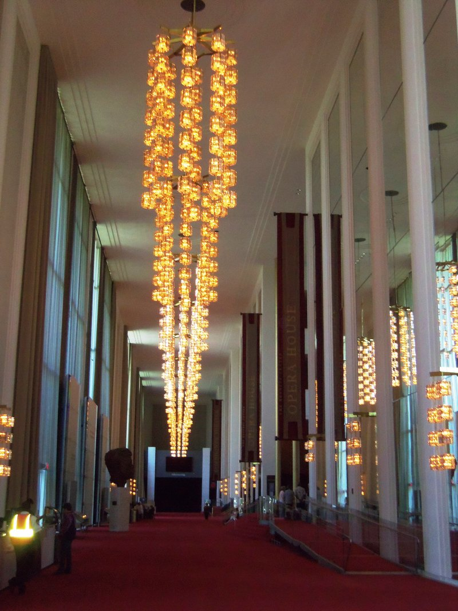
🚶 35 min · 🚕 8 min → hotel
Day 5 – Train Day – Philadelphia
🏨 From Hotel: 🚶 35 min · 🚕 5 min → Washington Union Station
🚊 Washington Union Station → Philadelphia 30th Street Station · Amtrak Northeast Regional · 1 hr 45 min
🎫 book at: amtrak.com
5:20am Washington Union Station → 7:11am Philadelphia 30th Street
8:50am Washington Union Station → 10:51am Philadelphia 30th Street
10:18am Washington Union Station → 11:55am Philadelphia 30th Street
🚉 ARRIVE Philadelphia 30th Street Station: 🚶 38 min · 🚕 12 min → Independence Hall
1. Independence Hall
↳ Independence Hall is where the Declaration of Independence was adopted in 1776 and the US Constitution drafted in 1787. Guided tours enter the Assembly Room where both documents were debated and signed, preserved with the original inkstand and the Rising Sun chair.
🏛️ Daily 9:00am - 5:00pm
⏰ ~1 hr
⚠️ Free timed-entry ticket required; reserve in advance
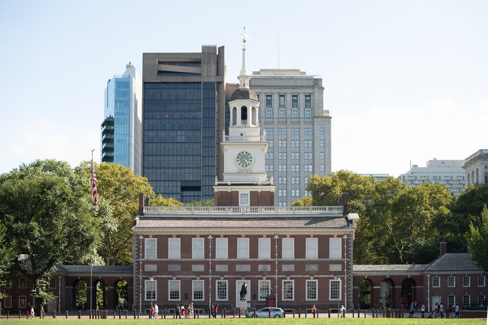
🚶 3 min · 🚕 2 min → Liberty Bell
2. Liberty Bell
↳ The Liberty Bell, with its famous fracture and the inscription "Proclaim Liberty throughout all the land," hangs in a glass pavilion facing Independence Hall. Cast in 1752, it became an emblem of abolition and civil rights over the following two centuries.
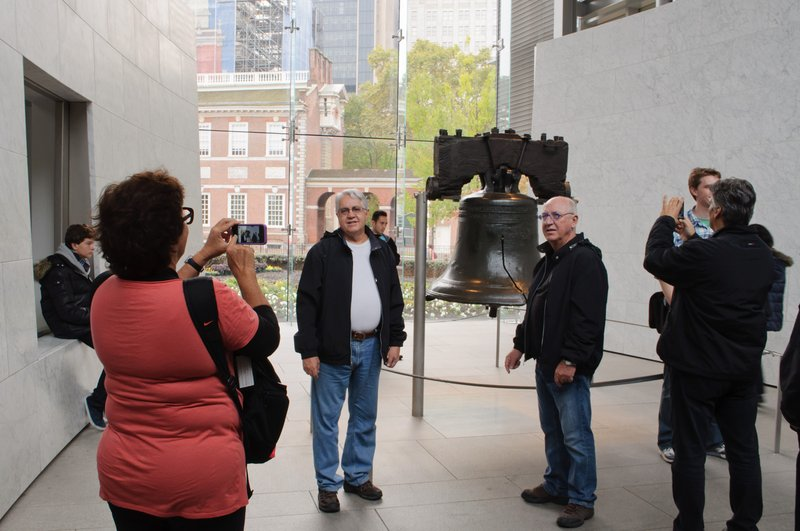
🚕 11 min → Eastern State Penitentiary
3. Eastern State Penitentiary
↳ Opened in 1829, Eastern State Penitentiary pioneered the "separate system" of solitary confinement and became the model for hundreds of prisons worldwide. Now a preserved ruin, its vaulted radial cellblocks and Al Capone's restored cell are explored on a self-guided audio tour narrated by Steve Buscemi.
🏛️ Daily 10:00am - 5:00pm
⏰ ~2 hr
⚠️ Timed daytime admission; reserve online in advance
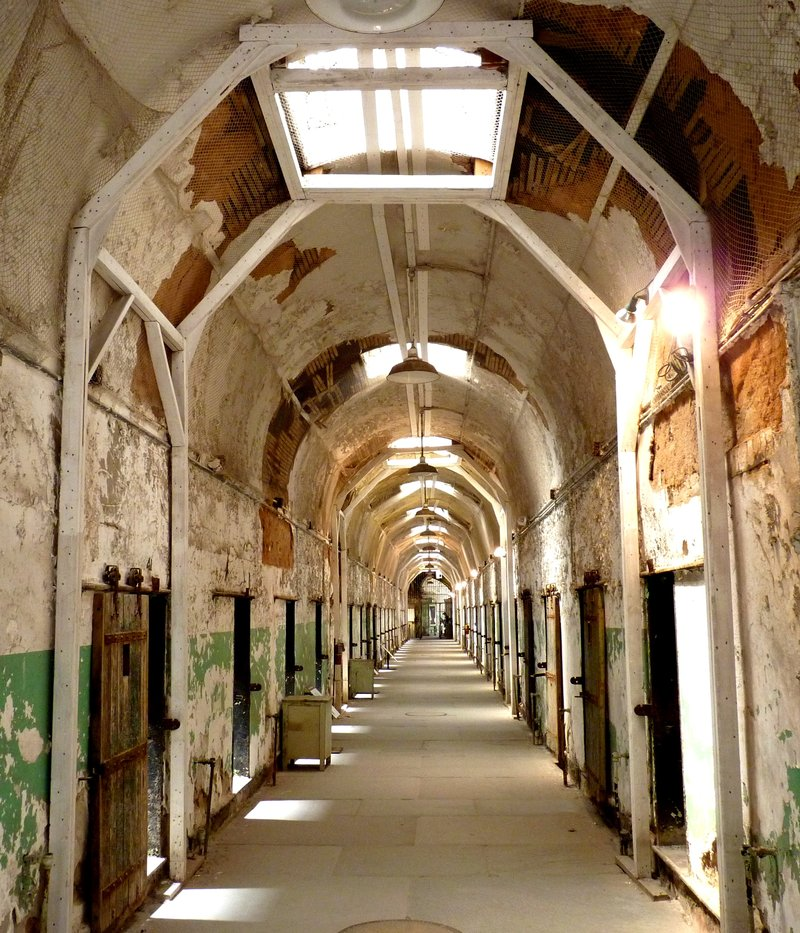
🚶 14 min · 🚕 5 min → Philadelphia Museum of Art
4. Philadelphia Museum of Art
↳ The Philadelphia Museum of Art holds more than 240,000 works across 200-plus galleries in a 1928 Greek Revival landmark. Its east entrance stair — the "Rocky Steps" — draws visitors for the sculpture of the boxer at the top and the skyline view down Benjamin Franklin Parkway.
🏛️ Thursday - Monday 10:00am - 5:00pm
🏛️ Friday 10:00am - 8:45pm
🚫 Closed Tuesday & Wednesday
⏰ ~2 hr
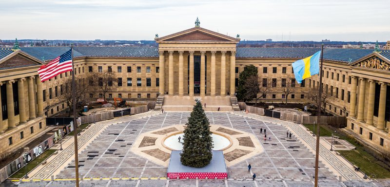
🚊 Philadelphia 30th Street Station → Washington Union Station · Amtrak Northeast Regional · 1 hr 50 min
🎫 book at: amtrak.com
3:55pm Philadelphia 30th Street → 5:41pm Washington Union Station
6:15pm Philadelphia 30th Street → 8:09pm Washington Union Station
7:44pm Philadelphia 30th Street → 9:40pm Washington Union Station
🚉 ARRIVE Washington Union Station: 🚶 35 min · 🚕 5 min → hotel
🗓️ Weekly Closures
Government Buildings · Closed Sunday
📅 Tours
Viator
↳ A narrated evening tour of DC's illuminated monuments by open-air trolley — Lincoln Memorial, the Washington Monument, the White House, and the Capitol Reflecting Pool, with a live guide covering the history of each landmark after dark.
🕐 6:30pm · ⏳ 2 hr 30 min · 👥 45 max
🚕 15 min
↳ A small-group tour of Arlington National Cemetery with a licensed guide — the Tomb of the Unknown Soldier Changing of the Guard, the Kennedy eternal flame, and Section 60, followed by an optional bus extension to the Mall monuments.
🕐 9:00am · ⏳ 3 hr · 👥 25 max
🚕 12 min
↳ A guided open-top double-decker bus tour of the National Mall monuments at night — Lincoln, Jefferson, FDR, WWII, Vietnam Veterans, and the Capitol, with a panoramic view of each illuminated landmark from the open upper deck.
🕐 7:00pm · ⏳ 2 hr · 👥 50 max
🚕 15 min
↳ A small-group electric-cart tour of the National Mall monuments by day or night — the Lincoln, Vietnam Veterans, Korean War, FDR, and Jefferson memorials, with a guide narrating behind the scenes of each site from an open-air vehicle.
🕐 10:00am · ⏳ 2 hr · 👥 6 max
🚕 10 min
↳ A guided evening van tour of DC's monuments and memorials at night — stops at the Lincoln Memorial, the White House, the WWII Memorial, and the Capitol, with a local guide and groups capped at 14 for a quieter after-dark experience.
🕐 6:30pm · ⏳ 3 hr · 👥 14 max
🚶 10 min · 🚕 3 min
GetYourGuide
↳ A Potomac River cruise with a buffet meal — brunch, lunch, or dinner options aboard the Spirit of Washington, with views of the DC waterfront, the Jefferson Memorial, and Reagan National Airport from the open deck.
🕐 12:00pm · ⏳ 2 hr · 👥 Open seating
🚕 12 min
↳ A 24-hour open-top double-decker bus tour covering the White House, Washington Monument, Lincoln Memorial, US Capitol, Jefferson Memorial, and National Cathedral with multilingual audio commentary.
🕐 9:00am · ⏳ 1 hr 30 min · 👥 Open bus
🚕 12 min
📅 3. Washington DC: Night Tour with 10+ Stops & Admission Tickets · GetYourGuide · 4.7⭐ · 400+ reviews
↳ A 3-hour guided night tour of the National Mall by bus — 10 illuminated monuments including the White House, WWII Memorial, Lincoln Memorial, and US Capitol, with admission tickets to the Washington Monument included.
🕐 7:00pm · ⏳ 3 hr · 👥 Small group
🚕 12 min
↳ A small-group sunset walking tour of the National Mall monuments — the Lincoln Memorial, Vietnam Veterans Memorial, Korean War Memorial, and the Jefferson Memorial reflecting in the Tidal Basin, as each site transitions from dusk to floodlit night.
🕐 6:00pm · ⏳ 2 hr 30 min · 👥 15 max
🚕 10 min
↳ A 6-hour sightseeing tour combining a guided bus tour of 10+ National Mall stops with a seasonal Potomac River cruise — Lincoln Memorial, US Capitol, the White House, and Arlington Cemetery in one full-day itinerary.
🕐 9:00am · ⏳ 6 hr · 👥 Small group
🚕 12 min
TripAdvisor
📅 1. Capitol Hill: US Capitol & Library of Congress Small-Group Tour · TripAdvisor · 4.9⭐ · 500+ reviews
↳ A small-group guided tour inside the US Capitol and Library of Congress — the Rotunda, National Statuary Hall, the Capitol Crypt, and the Jefferson Building's Great Hall and Main Reading Room, with reserved entry included.
🕐 9:00am · ⏳ 3 hr · 👥 Small group
🚕 15 min
↳ A 2-hour walking tour through Georgetown's historic streets — the C&O Canal, antebellum townhouses, power corridors, and the neighborhood gossip behind the buildings, led by a local guide fluent in the political and social history of DC's oldest enclave.
🕐 10:00am · ⏳ 2 hr · 👥 Small group
🚕 12 min
↳ A 2.5-hour evening narrated trolley tour of DC's illuminated monuments — the Lincoln Memorial, White House, WWII Memorial, and Capitol Reflecting Pool, with a live guide on an open-air vehicle after dark.
🕐 6:30pm · ⏳ 2 hr 30 min · 👥 45 max
🚕 15 min
↳ A 2-hour small-group electric cart tour of the National Mall at night — Lincoln Memorial, Vietnam Veterans Memorial, Korean War Memorial, FDR Memorial, and Jefferson Memorial, with a local guide and groups of six for a quieter after-dark experience.
🕐 7:30pm · ⏳ 2 hr · 👥 6 max
🚕 10 min
↳ A 2-hour evening walking ghost tour through DC's most haunted streets — the White House grounds, the Octagon House, Lafayette Square, and Decatur House, with a theatrical guide weaving paranormal history and political intrigue into each stop.
🕐 8:00pm · ⏳ 2 hr · 👥 Small group
🚶 3 min · 🚕 2 min
☕ Cappuccino
Compass Coffee · 4.6⭐ · 500+ reviews
🏛️ Monday - Friday 7:00am - 7:00pm · Saturday - Sunday 8:00am - 7:00pm
🚕 8 min
La Colombe · 4.7⭐ · 400+ reviews
Slipstream · 4.5⭐ · 600+ reviews
🏛️ Monday - Friday 7:00am - 10:00pm · Saturday - Sunday 8:00am - 10:00pm
🚕 6 min
Peregrine Espresso · 4.6⭐ · 700+ reviews
🏛️ Monday - Friday 7:00am - 5:00pm · Saturday - Sunday 8:00am - 5:00pm
🚕 12 min
Swings Coffee Roasters · 4.6⭐ · 300+ reviews
🏛️ Monday - Friday 7:00am - 5:00pm
🚫 Closed Saturday & Sunday
🚶 8 min · 🚕 3 min
🫕 Restaurants Near Hotel
Off the Record · 4.5⭐ · 600+ reviews
↳ The hotel's iconic political bar — caricatures, dark wood, power-drinking lore.
🏛️ Daily 11:30am - 12:00am
🏨 In the hotel
Old Ebbitt Grill · 4.4⭐ · 5000+ reviews
↳ DC's oldest saloon; mahogany panels, Chesapeake oysters, and Victorian grandeur.
🏛️ Daily 8:30am - 1:00am
🚶 4 min · 🚕 2 min
Equinox · 4.5⭐ · 800+ reviews
↳ Seasonal Mid-Atlantic fine dining near the White House; tasting menu is weekly.
🏛️ Monday - Friday 11:30am - 2:30pm · Monday - Saturday 5:30pm - 10:00pm
🚶 6 min · 🚕 2 min
Rasika · 4.6⭐ · 2000+ reviews
↳ Modern Indian small plates — palak chaat and black cod are DC dining staples.
🏛️ Monday - Friday 11:30am - 10:00pm · Saturday - Sunday 5:00pm - 10:30pm
🚶 15 min · 🚕 5 min
Jaleo · 4.5⭐ · 1500+ reviews
↳ José Andrés's DC flagship; 60-plus Spanish tapas with jamón ibérico and paella.
🏛️ Daily 11:30am - 11:00pm
🚶 18 min · 🚕 5 min
🍽️ Downtown Restaurants
Founding Farmers DC · 4.4⭐ · 3000+ reviews
↳ Farmer-owned American bistro in the IMF building; all-day menu, reliably packed.
🏛️ Monday - Thursday 7:00am - 11:00pm · Friday 7:00am - 12:00am · Saturday 8:00am - 12:00am · Sunday 8:00am - 11:00pm
Kinship · 4.7⭐ · 500+ reviews
↳ Eric Ziebold's American fine dining; weekly-changing menu among DC's finest.
🏛️ Tuesday - Saturday 5:00pm - 10:00pm
🚫 Closed Sunday & Monday
Centrolina · 4.6⭐ · 600+ reviews
↳ Italian market and trattoria in CityCenterDC; handmade pasta and focused wines.
🏛️ Tuesday - Thursday 11:30am - 9:30pm · Friday - Saturday 11:30am - 10:00pm · Sunday 11:30am - 9:00pm
🚫 Closed Monday
Bresca · 4.7⭐ · 700+ reviews
↳ Michelin-starred modern cuisine in a whimsical Logan Circle room by Ryan Ratino.
🏛️ Tuesday - Saturday 5:30pm - 10:00pm
🚫 Closed Sunday & Monday
Zaytinya · 4.5⭐ · 3500+ reviews
↳ José Andrés's eastern Mediterranean mezze; a Penn Quarter anchor since 2002.
🏛️ Daily 11:30am - 11:00pm
🍮 Local Tastes
Half-Smoke
↳ The half-smoke is DC's signature sausage — a coarse pork-and-beef blend, naturally smoked and served in a split-top bun with chili, mustard, and onions. Ben's Chili Bowl on U Street has served it continuously since 1958.
Ethiopian Cuisine
↳ DC's Adams Morgan and the U Street corridor form one of the most concentrated Ethiopian dining districts in the country, with injera-based communal meals at dozens of family-run restaurants across a four-block stretch.
Mumbo Sauce
↳ A sweet, tangy, mildly spicy red sauce applied to chicken wings and fried food at DC carryout restaurants since the 1950s. Found nowhere else with the same cultural weight; a fixture at neighborhood carry-outs across the city.
Chesapeake Blue Crab
↳ Chesapeake Bay blue crab steamed in Old Bay is the defining seafood of the DC and Baltimore region. The Wharf on the Southwest waterfront has multiple vendors serving hard-shell crabs at outdoor tables alongside the water.
🎭 Shows, Performances & Concerts
Kennedy Center
↳ DC's national performing arts center — National Symphony Orchestra, Washington National Opera, and Broadway tours in three halls on the Potomac.
🚕 8 min
National Theatre
↳ The oldest continuously operating theater in DC, presenting Broadway touring productions since 1835, two blocks from the White House.
🚶 5 min · 🚕 2 min
🚌 Getting Around
🚕 Uber
🚕 Lyft
🚝 DC Metro
↳ Six color-coded lines; Mall · Capitol Hill · Arlington · Dulles corridor.
Washington DC has a metro — operated by Washington Metropolitan Area Transit Authority.
🚆 Train Stations Near Hotel
🚊 Washington Union Station
Amtrak Northeast Corridor → New York · Philadelphia · Boston · Amtrak Capitol Limited → Chicago · Amtrak Cardinal → New York via Appalachians.
🚶 35 min · 🚕 5 min
⛲️ Day Trips by Train
Baltimore · 40 min
↳ Inner Harbor · National Aquarium · Fort McHenry, birthplace of the Star-Spangled Banner, all a short ride beyond Baltimore Penn Station.
🎫 book at: amtrak.com or Omio
New York City · 2 hr 40 min
↳ Acela and Northeast Regional reach Penn Station; 30th Street Station connects to Midtown for a full day.
🎫 book at: amtrak.com or Omio
🏓 Pickleball
Kraken Kourts · Indoor
↳ 14 indoor courts with cabanas; open play and court reservations available
🏛️ Monday - Tuesday 5:00pm - 10:00pm · Wednesday - Thursday 8:00am - 10:00pm · Friday - Saturday 8:00am - 12:00am · Sunday 8:00am - 10:00pm
🚕 18 min
⭐ Michelin Restaurants
⭐⭐ Jônt
↳ Omakase counter above Bresca; Japanese-inspired tasting menu by Ryan Ratino.
🚕 10 min
⭐⭐ Inn at Little Washington
↳ Patrick O'Connell's legendary country inn; 90-minute drive from DC.
🚕 1h 30min
⭐ Pineapple and Pearls
↳ Aaron Silverman's eclectic tasting menu in a relaxed Capitol Hill dining room.
🚕 12 min